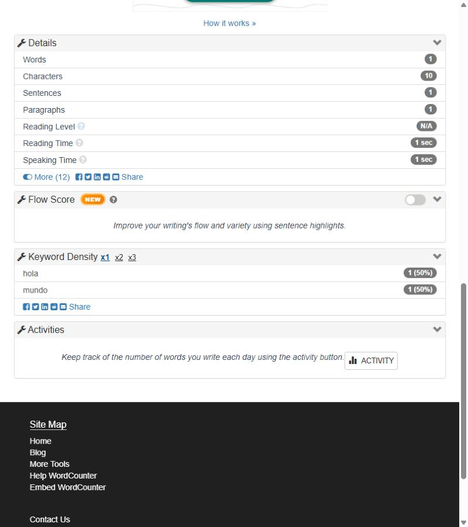
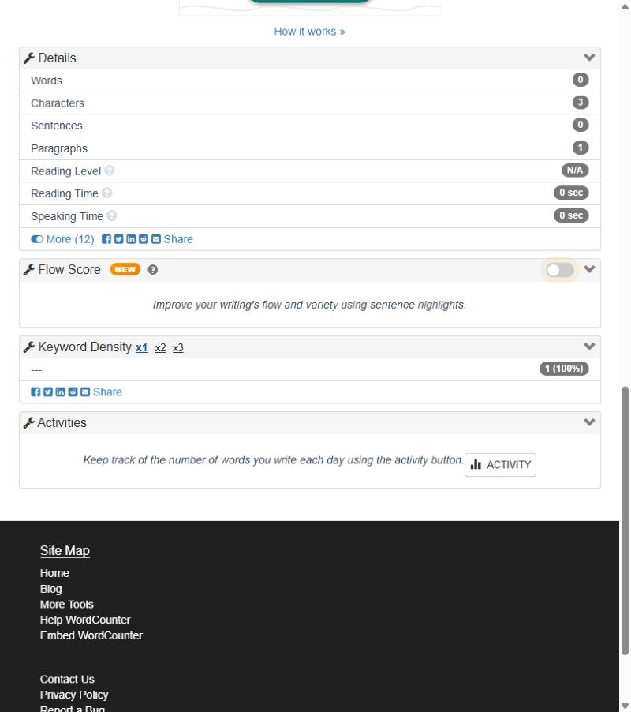
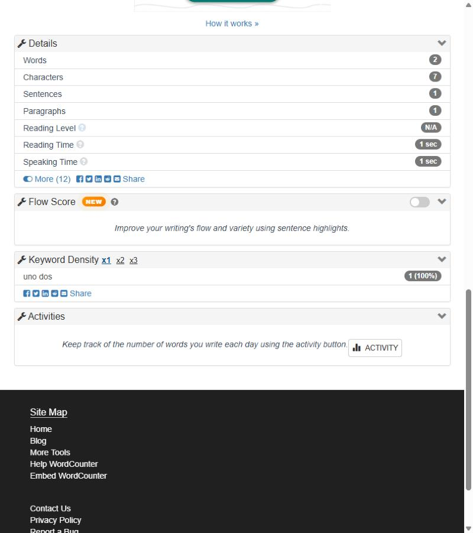
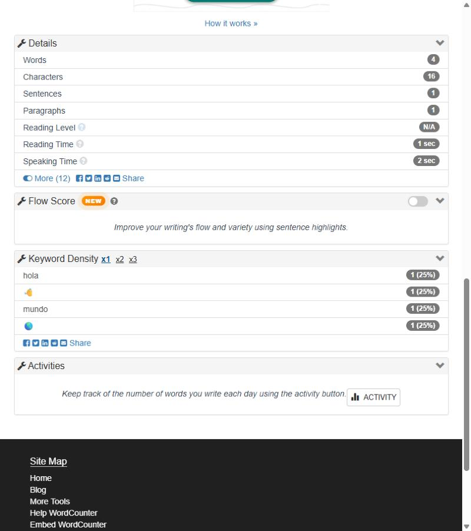
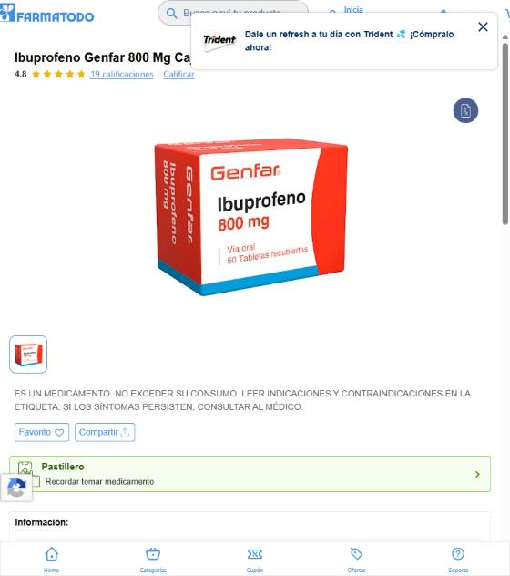
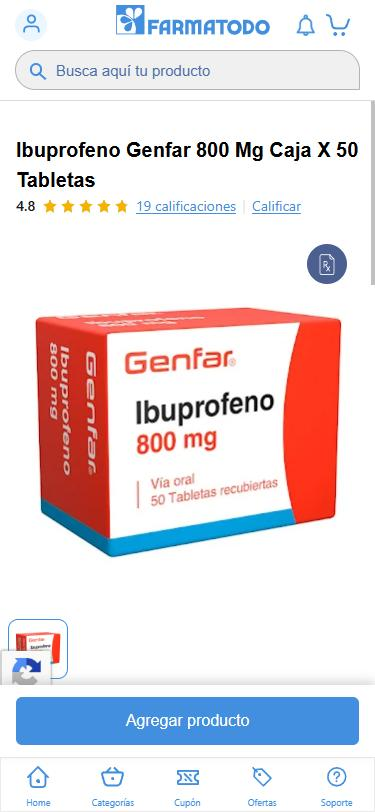
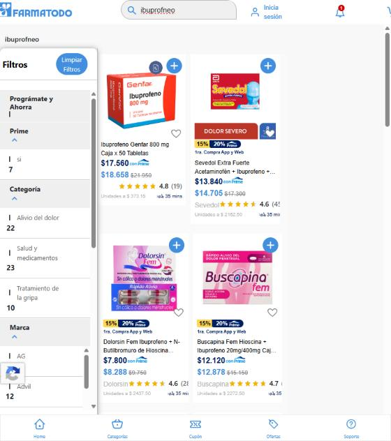
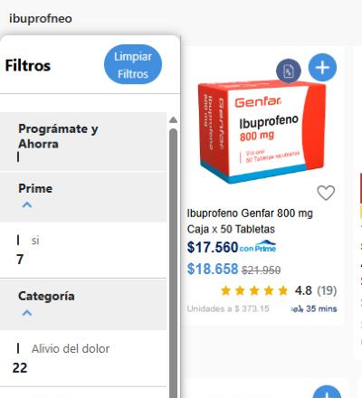

| Repositorio | github.com/yoelalmiron1997/farmatodo-qa-test-engineering |
| Portal de calidad | yoelalmiron1997.github.io/farmatodo-qa-test-engineering (resultados reales de cada corrida) |
| Última ejecución | functional-tests #39992999223 · resultados en el portal → Test Execution |
| Ejecuciones | GitHub Actions → functional-tests (reporte resumen y evidencias por corrida) |
| # | Ejercicio | Respuesta | Pág. |
|---|---|---|---|
| 1 | Suite automatizada de wordcounter.net + reporte resumen | Selenium + Pytest con Page Object Model. 20 casos E2E validan palabras, caracteres y top 3 de Keyword Density contra un oráculo independiente. Última corrida en CI: 16/16 casos funcionales en PASS, 0 flaky; los 4 FAIL son los defectos del Ej. 2, reproducidos a propósito. | 2 |
| 2 | Reporte de fallas de WordCounter | 4 defectos confirmados (1 mayor, 3 menores) y 2 oportunidades de mejora, con pasos, resultado esperado/actual y evidencia. | 4 |
| 3 | 3 problemas de UX en Farmatodo | 3 hallazgos con vista, pasos para replicar, evidencia y propuesta. El más grave: entre 768 y 991 px el detalle de producto no muestra precio ni botón de compra. | 7 |
| 4 | Contador de frecuencia de palabras | Algoritmo propio en Python (solo biblioteca estándar). Salida idéntica al ejemplo del PDF. Complejidad O(N + U log U) en tiempo y O(U + L) en espacio. | 10 |
specs/), capturas (docs/assets/) y el historial de ejecuciones (rama qa-history).Los tres objetivos del enunciado, cada uno con un caso P0 y casos de borde:
WordCounterPage y KeywordDensityPanel encapsulan localizadores y acciones, sin aserciones. Los valores del panel se leen en una sola llamada para evitar lecturas a medio redibujar.sleep).functional-tests #39992999223 · 2026-10-23 17:11 UTC · Ubuntu 24.04 · Chrome 155 headless · Python 3.12 · Selenium 4.51
| Caso | Escenario | Prio. | Resultado |
|---|---|---|---|
| TC-WC-001 | Conteo básico de palabras | P0 | PASS |
| TC-WC-002 | Conteo básico de caracteres | P0 | PASS |
| TC-WC-003 | Top 3 de Keyword Density sin empates | P0 | PASS |
| TC-WC-004 | Texto de ejemplo del PDF en WordCounter | P1 | PASS |
| TC-WC-005 | Espacios adicionales, iniciales y finales | P1 | PASS |
| TC-WC-006 | Signos de puntuación | P1 | PASS |
| TC-WC-007 | Mayúsculas y minúsculas en Keyword Density | P1 | PASS |
| TC-WC-008 | Actualización del contenido | P1 | PASS |
| TC-WC-009 | Borrado total del texto | P1 | PASS |
| TC-WC-010 | Texto multilínea | P1 | PASS |
| TC-WC-011 | Empates en el top 3 de Keyword Density | P2 | PASS |
| TC-WC-012 | Acentos y ñ (texto en español) | P1 | PASS |
| TC-WC-013 | Números, guiones y apóstrofes | P2 | PASS |
| TC-WC-014 | Texto extenso | P2 | PASS |
| TC-WC-015 | Keyword Density con stop words | P1 | PASS |
| TC-WC-016 | Emojis y caracteres fuera del BMP | P2 | PASS |
| TC-WC-017 | Reproducción BUG-WC-001: punto sin espacio | P2 | FAIL conocido |
| TC-WC-018 | Reproducción BUG-WC-002: palabra formada solo por guiones | P2 | FAIL conocido |
| TC-WC-019 | Reproducción BUG-WC-003: espacio no separable | P2 | FAIL conocido |
| TC-WC-020 | Reproducción BUG-WC-004: emojis en caracteres | P2 | FAIL conocido |
TC-WC-017…020 describen el comportamiento correcto y fallan mientras el defecto exista. Cuando WordCounter los corrija, pasarán solos.
Cada corrida genera el reporte en la página de la ejecución de GitHub Actions y en el artifact functional-reports (PDF, HTML y Markdown, con capturas y DOM de cada fallo). Corrida completa (43 casos: 20 E2E + algoritmo y framework):
| Caso | Categoría | Descripción del error |
|---|---|---|
| TC-WC-017 | assertion | Keyword Density lista 2 entradas para hola.mundo, pero el contador indica 1 palabra (BUG-WC-001) |
| TC-WC-018 | assertion | --- aparece en Keyword Density con 0 palabras contadas (BUG-WC-002) |
| TC-WC-019 | assertion | Keyword Density muestra uno dos como una sola entrada cuando el espacio es NBSP (BUG-WC-003) |
| TC-WC-020 | assertion | 16 caracteres en lugar de 14: cada emoji suma 2 (BUG-WC-004) |
Quality gate: WARN. Los cuatro fallos son defectos conocidos y documentados, así que el pipeline no se bloquea pero los deja visibles. Un fallo nuevo en un P0, o un P0 flaky, sí bloquearía.
git clone https://github.com/yoelalmiron1997/farmatodo-qa-test-engineering.git cd farmatodo-qa-test-engineering uv sync --group dev uv run pytest tests/e2e --reruns 2 --qa-results-dir reports uv run qa results build --results-dir reports --out reports/run-result.json uv run qa report summary --run reports/run-result.json --out-dir reports
Exploración funcional guiada por charters, sobre la configuración por defecto. Solo se reportan hallazgos reproducidos al menos dos veces y con evidencia. Cada defecto tiene además un test automatizado que lo reproduce.
| ID | Tipo | Severidad | Título |
|---|---|---|---|
| BUG-WC-001 | Defecto | Menor | Contador y Keyword Density no coinciden ante un punto sin espacio |
| BUG-WC-002 | Defecto | Menor | Un token formado solo por guiones aparece como palabra clave con 0 palabras |
| BUG-WC-003 | Defecto | Mayor | Keyword Density no separa palabras unidas por espacio no separable (NBSP) |
| BUG-WC-004 | Defecto | Menor | Cada emoji cuenta como 2 caracteres |
| OBS-WC-001 | Mejora | — | Lista de stop words incompleta e inconsistente |
| OBS-WC-002 | Mejora | — | La misma palabra en NFC y NFD se lista dos veces |
hola.mundo (sin espacio después del punto).Ambas funciones aplican la misma regla: si hay 1 palabra, Keyword Density muestra 1 entrada.
El contador indica 1 word, pero Keyword Density lista 2 entradas: hola y mundo. Además, hola,mundo cuenta 2 palabras y hola.mundo cuenta 1.
Omitir el espacio después del punto es un error de tipeo frecuente; los dos indicadores se contradicen. Unificar la tokenización de ambas funciones.

---.Con 0 palabras, Keyword Density no muestra entradas (como ocurre con números o letras sueltas).
El encabezado muestra 0 words 3 characters y Keyword Density lista --- con 1 (100 %).
Los separadores de texto (---, ***) contaminan el ranking y pueden desplazar palabras reales del top. Excluir tokens sin letras ni dígitos.

uno dos, donde el espacio es U+00A0 (habitual al copiar desde Word o páginas web).Keyword Density muestra uno 1 y dos 1, coherente con el contador.
El contador indica 2 words, pero Keyword Density muestra una única entrada uno dos 1 (100 %).
Altera el resultado principal de Keyword Density al pegar texto: el top 3 puede mostrar pares inexistentes y ocultar las palabras reales. Tratar U+00A0 como espacio al tokenizar.

hola 👋 mundo 🌎.14 caracteres: 9 letras, 3 espacios y 2 emojis.
16 caracteres: el sitio cuenta unidades UTF-16 (String.length), así que cada emoji suma 2. Además, los emojis aparecen en Keyword Density.
Quien escribe para un límite (redes sociales, SMS, SEO) ve un total mayor al real. Contar caracteres percibidos con Intl.Segmenter.

| ID | Observación | Sugerencia |
|---|---|---|
| OBS-WC-001 | Con should would could, Keyword Density excluye would pero lista should y could. Las stop words en español (el, la, de, que) nunca se excluyen. | Documentar y completar la lista, y aplicar la del idioma del texto. |
| OBS-WC-002 | café en forma NFC y en NFD (frecuente al copiar desde macOS) aparece como dos entradas distintas. | Normalizar a NFC antes de contar (el algoritmo del Ej. 4 ya lo hace). |
Método: evaluación heurística (10 heurísticas de Nielsen y criterios de WCAG 2.2) sobre búsqueda, detalle de producto, carrito y checkout. Cada hallazgo se reprodujo y se verificó en el DOM. Severidad según la escala de Nielsen (0–4).
| ID | Vista | Flujo | Problema | Severidad |
|---|---|---|---|---|
| UX-FT-001 | Web desktop, ventana de 768–991 px | Detalle de producto | No se muestran ni el precio ni el botón de compra | 4 — catastrófico |
| UX-FT-002 | Web desktop (~800 px) | Búsqueda | Los filtros no se reconocen como seleccionables y no funcionan con teclado | 3 — mayor |
| UX-FT-003 | Web desktop (1366 y ~800 px) | Carrito y checkout | Se agrega un medicamento con fórmula sin aviso y una bolsa que el usuario no pidió | 3 — mayor |
Qué pasa. En ese rango, la página muestra imagen, descripción y ficha técnica, pero no el precio ni el botón “Agregar producto”. En móvil existe una barra fija de compra y desde 992 px aparece el bloque de escritorio; en el medio no aparece ninguno.
Cómo replicarlo. Abrir farmatodo.com.co/producto/1000591-ibuprofeno-genfar-800-mg-caja-x-50-tabletas, reducir la ventana a ~800 px y recorrer la página: no aparecen el precio ($17.560) ni el botón. Al ensanchar a 992 px, el bloque aparece.
Causa verificada en el DOM. El bloque de compra tiene d-none d-lg-block: queda oculto por debajo de 992 px.


Impacto. Bloquea la conversión: el usuario llega al producto y no puede comprar, sin ningún indicio de que falte algo.
Propuesta. Mostrar un componente de compra en todos los anchos (barra fija por debajo de 992 px) y agregar pruebas de regresión visual en 768, 800, 900 y 991 px.
Qué pasa. El indicador de cada filtro (Categoría, Marca, Prime) se dibuja como una raya de 2 × 12 px en lugar de una casilla: no parece un control. Las opciones son div sin rol, tabindex ni aria-checked, así que no se alcanzan con teclado ni las anuncia un lector de pantalla.
Cómo replicarlo. Con la ventana a ~800 px, buscar un producto (por ejemplo ibuprofneo) y observar el panel Filtros; inspeccionar una opción en DevTools.
Impacto. Los filtros parecen texto informativo. Incumple WCAG 2.2 §2.1.1 (Teclado), §4.1.2 (Nombre, función, valor) y §2.5.8 (objetivo mínimo de 24 × 24 px).
Propuesta. Usar input type="checkbox" nativos con <label>, un indicador de al menos 24 × 24 px y estado seleccionado visible.


Qué pasa. (1) El ibuprofeno 800 mg requiere fórmula médica, pero al agregarlo no aparece ningún aviso, y en el carrito tampoco. (2) Tras agregar solo el ibuprofeno, el carrito muestra 2 productos: se suma una “Bolsa Biodegradable Farmatodo” ($600) sin explicación, que desaparece sola al quitar el medicamento.
Cómo replicarlo. En la página del producto a 1366 px, presionar Agregar producto, abrir /carrito y presionar Ir a pagar (abre el login: límite del análisis).
Impacto. El usuario descubre tarde que necesita fórmula (pedidos fallidos, contactos a soporte), y un ítem cobrado que no agregó afecta la confianza.
Propuesta. Rotular “Requiere fórmula médica” junto al botón de compra y en el carrito, explicando la carga de la fórmula antes del pago. Si la bolsa es obligatoria, indicar el motivo; si no, permitir quitarla.
Programa en Python que lee un archivo de texto y muestra la cantidad de palabras, la cantidad de caracteres (incluyendo espacios, sin saltos de línea) y la frecuencia de cada palabra, de mayor a menor y alfabéticamente en caso de empate. Solo usa la biblioteca estándar. Código: src/farmatodo_qa/word_frequency/.
farmatodo farmatodo farmatodo farmatodo farmatodo cuida cuida tu salud farmatodo cuida toda tu salud
uv run word-frequency data/samples/farmatodo_example.txt
14 words 99 characters farmatodo: 6 cuida: 3 salud: 2 tu: 2 toda: 1
_WORD_RE = re.compile(r"[^\W_]+(?:['’\-][^\W_]+)*") # letras/dígitos Unicode, con ' o - internos
_LINE_BREAKS = frozenset("\r\n")
def tokenize(text: str) -> list[str]:
normalized = unicodedata.normalize("NFC", text)
return [m.group(0).casefold() for m in _WORD_RE.finditer(normalized)]
def count_characters(text: str) -> int:
return sum(1 for char in text if char not in _LINE_BREAKS)
def sort_frequencies(counter: Counter[str]) -> tuple[tuple[str, int], ...]:
return tuple(sorted(counter.items(), key=lambda item: (-item[1], item[0])))
def analyze_lines(lines: Iterable[str]) -> TextStats:
counter: Counter[str] = Counter()
words = characters = 0
for line in lines: # streaming: una línea en memoria a la vez
tokens = tokenize(line)
words += len(tokens)
counter.update(tokens)
characters += count_characters(line)
return TextStats(words, characters, sort_frequencies(counter))
\n ni \r, extraer las palabras, pasarlas a minúsculas y acumularlas en un diccionario.(-frecuencia, palabra): mayor frecuencia primero y, en empate, orden alfabético.--histogram agrega barras).Con N = caracteres de la entrada, U = palabras distintas y L = largo de la línea más larga:
Un test lo verifica empíricamente: duplicar la entrada (100 000 → 200 000 palabras) aproximadamente duplica el tiempo.
don't, e-commerce). La puntuación no cuenta, Hola y hola son la misma palabra y camión no se parte en dos.tu antes que salud); el PDF pide orden alfabético (salud antes que tu). Ambos coinciden en 14 palabras y 99 caracteres.| Práctica | Qué se hizo |
|---|---|
| Especificación primero | 21 requisitos y 51 casos de prueba en specs/, cada uno con requisito, riesgo (impacto × probabilidad), prioridad, pasos y resultado esperado. La matriz de trazabilidad se genera y valida automáticamente. |
| Priorización por riesgo | 9 casos P0 (los tres objetivos de WordCounter, el reporte resumen, el núcleo del algoritmo y el quality gate), P1 para bordes reales y P2 para casos poco frecuentes, performance y defectos conocidos. |
| Arquitectura | Núcleo puro (oráculo, algoritmo, métricas, gate) separado de la infraestructura (Selenium, pytest, disco). La regla se verifica en CI con import-linter. 90 % de cobertura de código del framework. |
| Flaky tests | Cada intento se registra. Pasar al reintentar es FLAKY, nunca PASS; un P0 flaky bloquea. El historial detecta tests inestables entre corridas. |
| CI/CD | GitHub Actions: chequeos en cada PR, suite funcional en cada push y a diario, performance semanal, historial en la rama qa-history y portal en GitHub Pages. master protegida y develop sincronizada. |